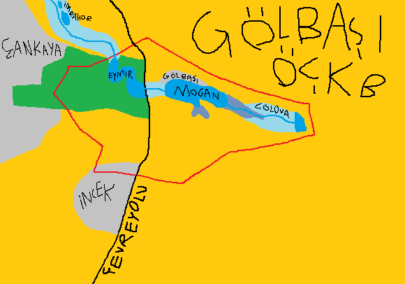

Gölbaşı. Adını göllerinden alan ilçe. Göl sebebiyle turizm var, turizm sebebiyle gökdelenler olabilirdi. Ama Çevre ve Şehircilik Bakanlığı gökdelen taraftarı olsa bile "bari Mogan'ın kıyısında olmasın" diyip oraya özel çevre koruma bölgesi koydular, bu sayede gökdelen dikemiyorlar.

Önemli Otoyol |
Özel Çevre Koruma Bölgesi Sınırı |
Yönetilen Orman |
Boş Arsa / Köy / Tarla |
Çok Eskiden Göl Olan Bölge |
Göl |
Sulak Alanlar |
Şehir |